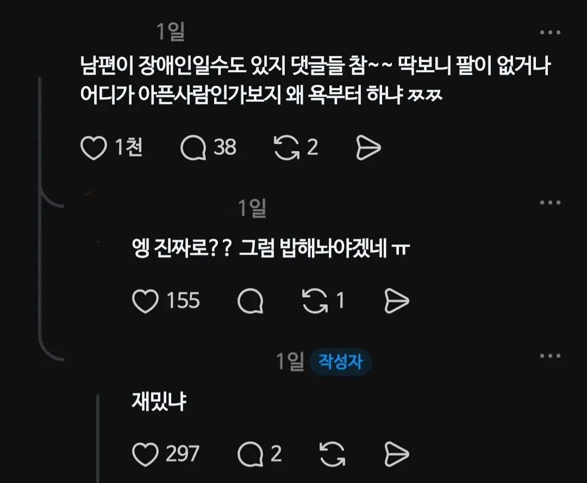
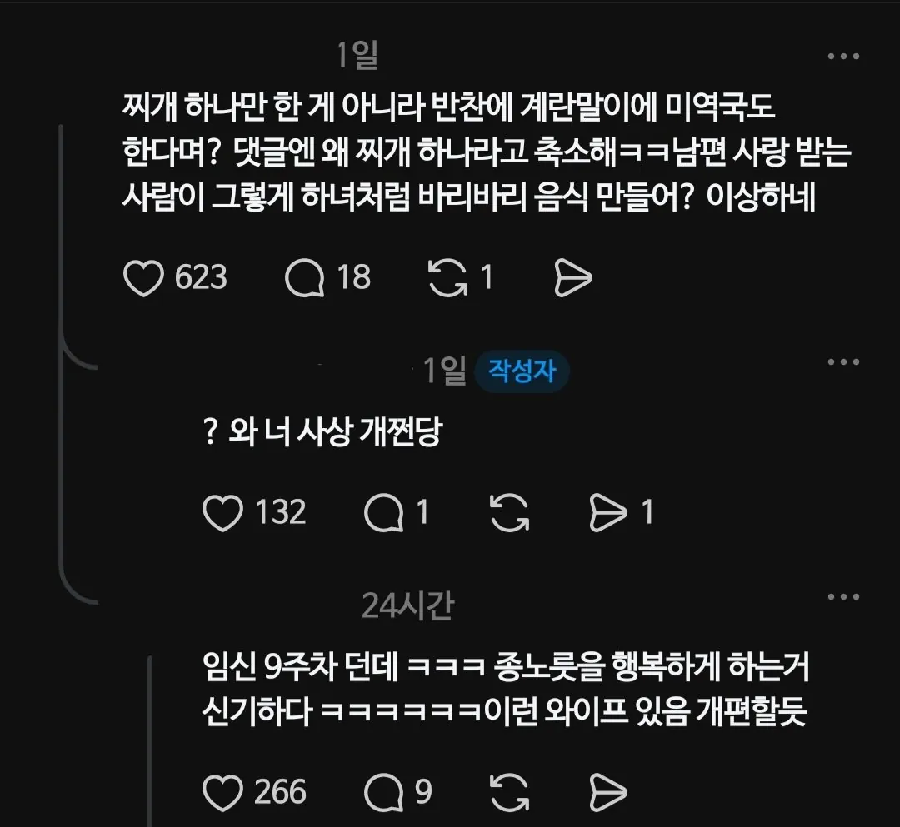
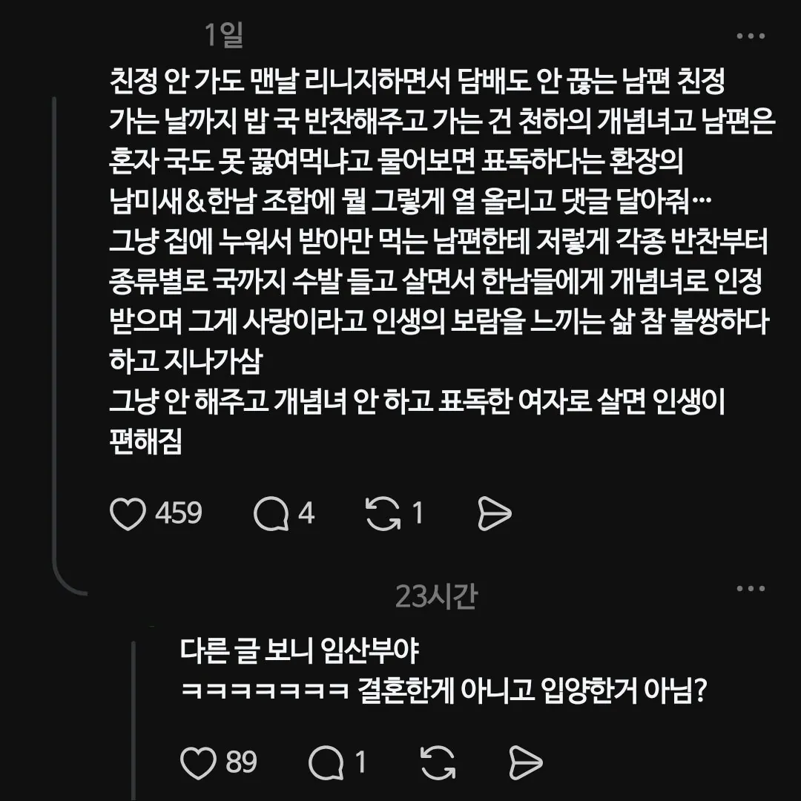
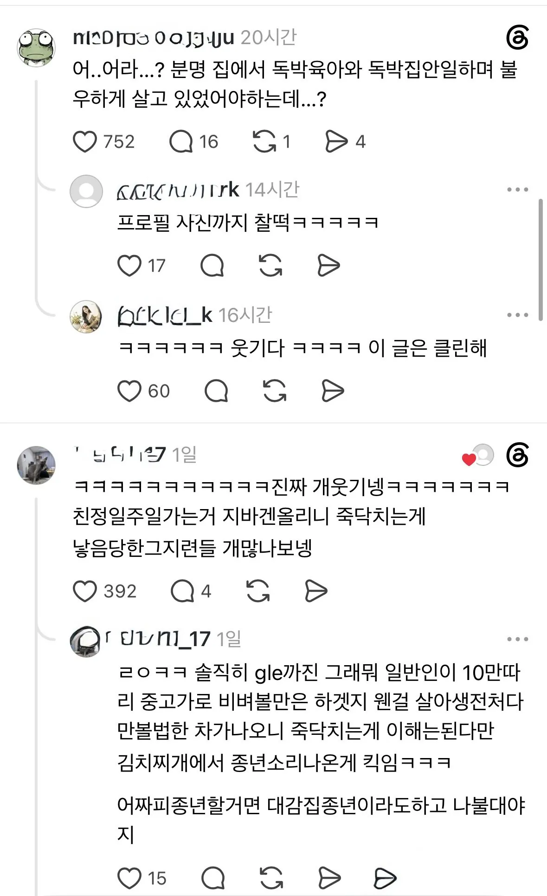

최근 스레드에서 친정 가는 기간 동안
남편 김치찌개와 반찬, 밥을 해주고 간다고
시녀짓이다, 남편이 장애인이냐
애기냐 뭐 이런 차마 이해가 안가는
욕을 잔뜩 먹던 사람이 있었는데..

실은 시녀 따위가 아닌
지바겐을 타고 다니는 공주님이었던 것..
놀랍게도 해당 글에서는
시녀 운운하던 사람은 단 한명도 보이지 않았다고 한다
글쓴이 본인도 김치찌개좌라는 별명을 즐기는 듯
역시 인심은 곳간에서 나온다는 말이 맞다는 걸
증명한 사례 아닌가 함..
댓글
수집 당시 댓글 3개
굴렀던곰 · 17 시간 전
대체 김치찌개를 얼마나 맛있게 하길래... 마누라가 해준거 아무말 없이 일주일치를 다먹는거지?
타잇타잇타잇 · 9 시간 전
울엄마 김찌 일주일 내내 먹어도 안질림
짜증나면욕함 · 8 시간 전
김치찌개 잘하면 그냥 신인데 ㄹㅇ 우리 엄마 김치찌개는 걍 쉐프들은 따위로 만드는 수준이라 일주일 먹어도 안질림